钢筋先验：间距 12-16 cm，rectified 等价 24-32 px；每轴 15-18 根，目标点数 225-324。每个底图都执行完整链路：底图 -> Hessian/Frangi -> binary/skeleton -> completed_surface -> DP 曲线交点。
| 方案 | 点数 | 线数 | 代理分 |
|---|---|---|---|
combined_response_full_pipeline | 256 | [16, 16] | 0.917 |
selected_response_full_pipeline | 256 | [16, 16] | 0.917 |
fused_instance_response_full_pipeline | 256 | [16, 16] | 0.906 |
depth_gradient_hessian_frangi_full_pipeline | 256 | [16, 16] | 0.841 |
frangi_like_full_pipeline | 256 | [16, 16] | 0.833 |
hessian_ridge_full_pipeline | 256 | [16, 16] | 0.743 |
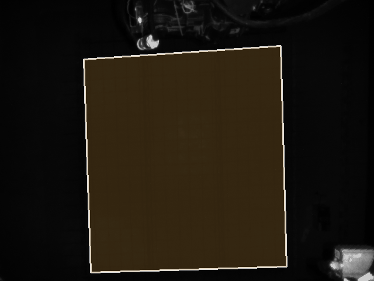
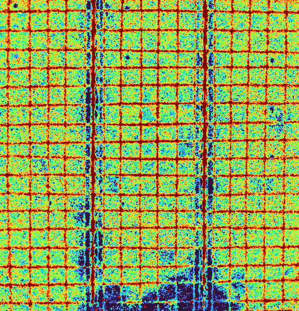
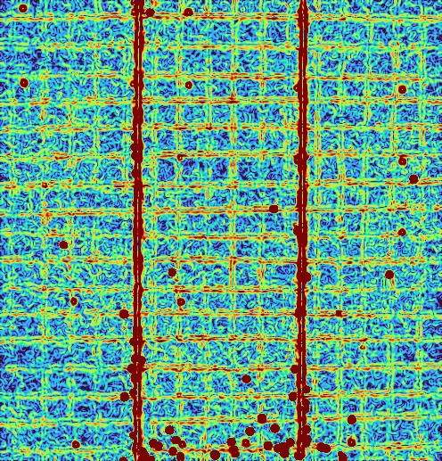
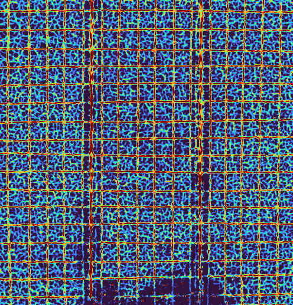

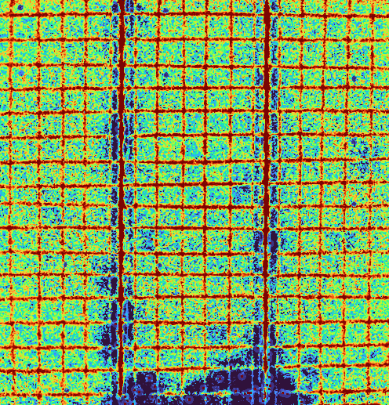


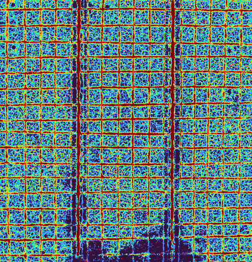
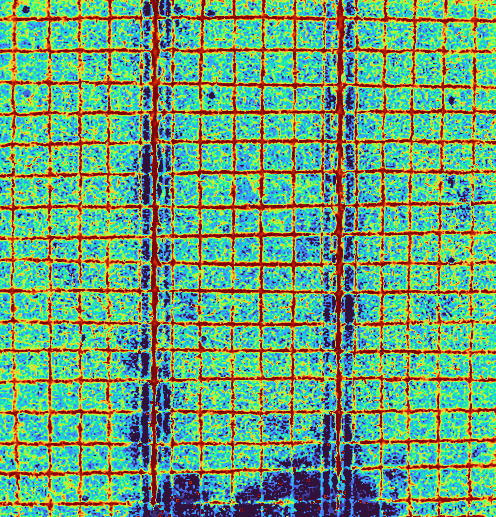
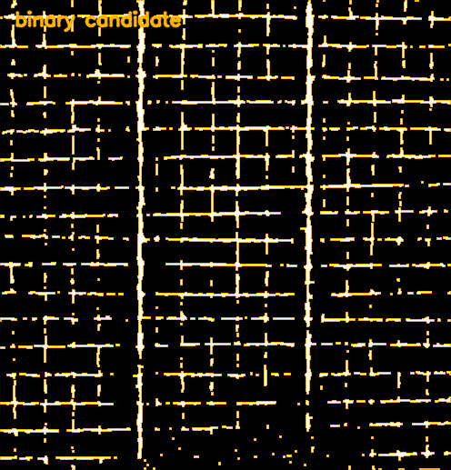
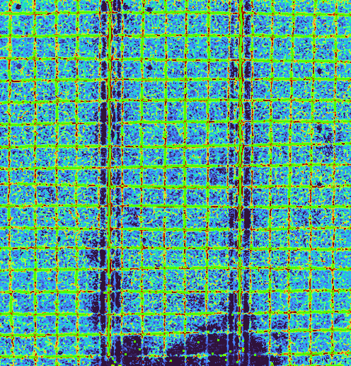
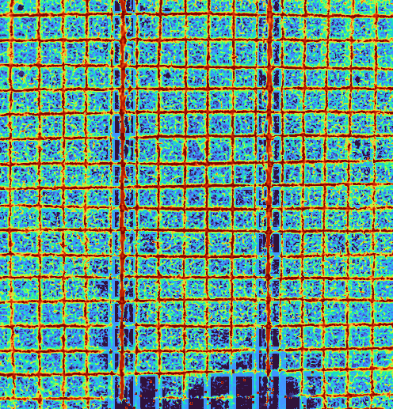
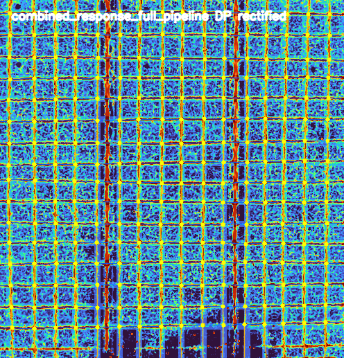

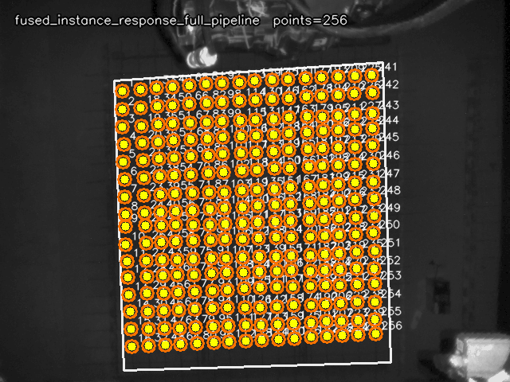
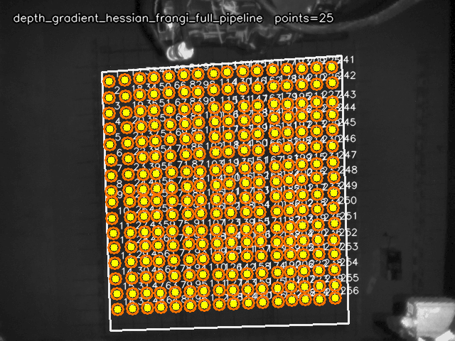